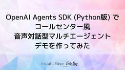

Insight Edge Tech Blog
https://techblog.insightedge.jp/
Insight Edge Tech Blog
フィード

【インターンレポート】OpenAI Agents SDK (Python版) でコールセンター風音声対話型マルチエージェントデモを作ってみた(おまけ付き) 24
24
Insight Edge Tech Blog
目次 【インターンレポート】OpenAI Agents SDK (Python版) でコールセンター風音声対話型マルチエージェントデモを作ってみた(おまけ付き) はじめに 1.AIエージェント✖️音声 = 音声エージェント 1.1 普及してきたAIエージェントについて 1.2 音声エージェントの恩恵について考える 1.3 リアルタイム音声対話API・音声エージェント開発ツールの紹介 2. OpenAI Agents SDK (Python版)で作る音声対話型マルチエージェントツール 2.1 OpenAI Agents SDKとは 2.2 2種類の音声エージェントの構造 2.3 デモの紹介 2.…
3日前
Amazon Bedrock Agentsで化粧品推薦AIを作ってみた！実際に使って月2500円節約できた話 30
Insight Edge Tech Blog
アジャイル開発チームの塚越です。2023年にInsight Edge(以下、IE)に参画し、そろそろ2年が経過します。 前回はエンジニアとしてPMに挑戦した 記事 を書きました。PoCフェーズでPMを務め、無事に商用化フェーズを迎えました。現在もPM兼務のエンジニアとしてこの案件に関わり続けています。エンジニア専任の案件も同時進行しており、このような市場価値の向上を目指せる環境を提供してくれたIEの方々には感謝しています。 今回は 『使い物になる』化粧品推薦AIエージェントをAmazon Bedrock Agentsなどのクラウドベンダー製品を活用し、ローコードサクッと『簡単に』作ろうとした話…
6日前

LibreChatとBedrock Knowledge Bases MCPでかんたん社内文書検索エージェント
Insight Edge Tech Blog
こんにちは！アジャイル開発チームの筒井です！ 最近の生成AIツールの進化は目覚ましいものがあります。Microsoft CopilotやGemini for Workspaceなど、業務向けの生成AIサービスも企業の業務基盤に組み込まれつつあり、もはやAIを業務で活用するのは特別なことではなくなっています。 その中でも「社内ドキュメントやFAQをAIチャットで（横断）検索したい」というニーズは生成AIが話題となり出した数年前から根強く存在しており、弊社でも当時から「社内ドキュメントを生成AI型チャットボットで検索できるシステム」を開発し、さまざまなプロジェクトの中で提供してきました。 しかし、…
11日前
10時間かかっていた遺伝的アルゴリズムをAWS Lambdaで高速化
Insight Edge Tech Blog
こんにちは、Insight EdgeのLead Engineerの日下です。 今回は、DEAPライブラリを利用した遺伝的アルゴリズムをAWS Lambdaで分散並列実行した話を紹介しようと思います。 目次 目次 背景と課題 並列化の方法の検討 どこを並列化するか？ どのように並列化するか？ 実装の方針 呼び出し側コード Lambda側コード その他 Lambdaを呼び出すためのDEAPへのmap実装 呼び出し側コード Lambda側コード 今回の実装の工夫ポイント 改善の評価 まとめ 前提 クラウド基盤: AWS 言語: Python ライブラリ: DEAP 背景と課題 ある案件で、遺伝的アル…
13日前
LLMは因果推論を理解できるのか？最新研究から探る生成AIの因果推論の可能性と課題
Insight Edge Tech Blog
目次 目次 背景 因果推論とLLM 因果推論 大規模言語モデル (LLM) LLM × 因果推論に関する先行研究 LLMは本当に因果関係を理解しているのか 相関から因果を推論する難しさ：Corr2Causeベンチマーク LLMの因果推論における落とし穴：時系列と反事実の課題 因果推論における「グラフ」と「順序」の重要性 LLMと因果グラフを統合 どのような使い方が良さそうか 今後の展望 終わりに 背景 データサイエンスチームの五十嵐です。本記事ではLLM×因果推論について最新論文を調査した内容をもとに考察します。 近年、大規模言語モデル（LLM）は自然言語処理の分野で目覚ましい進歩を遂げ、多岐…
19日前
Terraform Cloudを使ったマルチプロジェクト環境でのTerraform運用フロー
Insight Edge Tech Blog
こんにちは、Insight Edgeでエンジニアをしている島田です。今回はTerraform Cloud(HCP Terraform)を導入したため、普段Terraformの管理をしているインフラエンジニアの方やTerraform Cloudの導入を検討している方へ向けて、Insight EdgeでのTerraform Cloudの活用方法を紹介したいと思います。本記事は、Terraformの基本的な操作や、Google Cloud/AWS/AzureのいずれかのクラウドサービスにおけるIAMの基本的な概念、OIDC認証の概念、およびCI/CDの知識を前提としています。
25日前
CHI 2025聴講
Insight Edge Tech Blog
こんにちは、渡辺です。4/26-5/1にかけて横浜で開催された学会CHI 2025を聴講してきましたので、そのなかで気になった発表をいくつか紹介します。
1ヶ月前
世界は新たな時代を迎えようとしている
Insight Edge Tech Blog
こんにちは。CINO(Chief Innovation Officer)の森です。 ここ最近、機動戦士Gundam GQuuuuuuX(ジークアクス)に始まり、SDガンダム ジージェネレーション エターナルがリリースされたことで、 久しぶりに濃密にガンダムに触れています。 ガンダムの影響を強く受け過ぎてしまっているため、本記事では、やや小難しい言い回しが増えていることご了承ください。 ※ブログタイトルは、ジークアクスのSTORY冒頭 から取っています。アイキャッチ画像は例の"キラキラ"です。 目次 はじめに バズワードのレイヤーが上がっている ノスタルジーを感じるAIエージェントブーム AIエ…
2ヶ月前
模倣から創造へ。Lumaで拡張するデザインの可能性
Insight Edge Tech Blog
こんにちは、Insight Edge デザイナーの水上（みずかみ）です。 2023年5月にジョインさせていただき、Insight Edgeが発信する様々なデザインを担当しております。 今回は、近年話題になっている3D生成AIツール「Luma」を使ったビジュアルデザイン制作について、私自身が行った実験とその気づきを交えながらご紹介したいと思います。 Lumaとは？ 未来都市のアイデアをビジュアル化する実験 美しい写真を再現するアプローチ 発散と収束：ビジュアル化のプロセスでの使い分け 正しい模倣と、デザイナーのオーナーシップ 今後のAI活用の未来 Lumaとは？ Lumaは、画像や動画から高精度…
2ヶ月前
企業における合宿の価値考察
Insight Edge Tech Blog
こんにちは、Insight Edgeエンジニアリング部の久保です。 Insight Edgeは住友商事グループのデジタルトランスフォーメーション（DX）を加速する為の技術専門会社として設立され、2024年に設立5周年を迎えました。 住友商事という親会社を擁しながら、技術専門集団としての自治を保っているInsight Edgeはある種ベンチャー企業のような側面もあり、業務プロセスや社内制度も日々内部で議論しながら改善を続けています。 企業において、集中して討議するための施策として「合宿」があります。弊社では今まで合宿は実施した経験がありませんでしたが、今回弊社の「やってみる」というポリシーに則り…
2ヶ月前
第34回 人工知能学会 金融情報学研究会（SIG-FIN） 参加レポート
Insight Edge Tech Blog
はじめまして！Data Scientistの市川です。 今回は、先日第34回 人工知能学会 金融情報学研究会（SIG-FIN） に行ってきましたので、そのレポートをさせて頂ければと思います。 イベントの概要 発表の概要 SIG-FIN UFO-2024 タスク(6件) (01) 有価証券報告書の表を対象としたUFO-2024コンペティション (02) 表構造の理解と表項目の説明文生成に基づくTable QAタスクへの挑戦 (03) 有価証券報告書の表質問応答を対象としたSIG-FIN UFO-2024タスクにおけるUTUtLB25チームの性能評価 (04) 二値分類モデルに基づく有価証券報告書…
3ヶ月前
画像に対する異常検知結果をLLMに解説させてみた
Insight Edge Tech Blog
Insight Edgeのデータサイエンティストの山科です。 今回はタイトルにもある通り、画像に対する異常検知結果を大規模言語モデル(LLM)で解説させることで説明性を付与できるか検証を行いましたので、その結果について記載したいと思います。 なお、本内容は先日、長崎で開催された自然言語処理学会（NLP2025）でも発表した内容（自然言語での異常解釈:LLMを用いたAI説明モデルの提案）となっています。 目次 はじめに なぜ異常検知タスクで説明性が必要なのか 提案アプローチ 実験 まとめ はじめに 異常検知は製造業や医療分野で不可欠であり、迅速かつ正確な判断が求められていますが、その出力が抽象的…
3ヶ月前
リアルイベント「Insight Edge Re:design 2025 〜デジタルでともにNo.1事業群へ 〜」を開催しました
Insight Edge Tech Blog
はじめに こんにちは、Insight Edgeの関です。今回は、2025年2月21日（金）に大手町で開催された、住友商事グループ（SBU/事業会社、コーポレート）向けのInsight Edge主催リアルイベントについてご紹介します。 はじめに イベント開催目的 イベントコンテンツ詳細 ノベルティ イベント開催結果 まとめ イベント開催目的 Insight Edge（以下、IE）のミッションである「技術の力で世界を“Re-Design”する」から、「Re:design」をキーワードとして、IEの技術力を体感していただくイベントを開催しました。今は、「デジタルでともにNo.1事業群へ」をテーマに、…
3ヶ月前
LLMによるパワポ自動生成にチャレンジしてわかった課題
Insight Edge Tech Blog
はじめに こんにちは。２０２３年１２月からInsight Edgeに参画したData Scientistのカイオと申します。 入社してから幅広い分野のAIや機械学習だけでなく、API構築やクラウドと関わり海外出張までする機会があって非常に感謝しています。 最近、LLMを使ってPPTXを生成する案件に携わり得た知識を共有しようと思ってこの記事を書きました。 目次 PPTXファイルの構成 PythonによるPPTXライブラリ(python-pptx) わかった課題 まとめ PPTXファイルの構成 皆様ご存知だと思いますが、PowerPointが世界一使われている発表資料です。OpenOffice等…
3ヶ月前
PoCの品質特性とアーキテクチャを考える
Insight Edge Tech Blog
こんにちは、Insight Edgeでエンジニアをしています伊藤です。「これよくできているな」と言ってもらえるような設計・仕組みを目指して日々のエンジニアリングに取り組んでいます。今回の記事では私の好物であるシステムアーキテクチャについてPoC(概念実証)の観点から考察してみたいと思います。Insight Edgeは最先端技術をビジネスに活かすための技術者集団です。そのため、プロジェクトではPoC(概念実証)としてプロトタイプを作成し、実際の現場・ユーザに試していただくことが多いです。 PoCをすることによって- 想定しているテクノロジーの使い方で実際にビジネスを変えることができるか- 役立てるために埋めなければいけないギャップは何か- 適切にギャップをカバーすることで実際に使えるものができるかといった観点を確認し、最終的にどんなシステムを作るべきかについての学びを得た上で次のステップへと進みます。本記事では、本番システムの開発とは異なるPoCならでは特性を品質面を中心に整理しつつ、アーキテクチャに求められる要素について考えてみたいと思います。
4ヶ月前
LM Studio を使ってローカルでLLMを実行する方法
Insight Edge Tech Blog
こんにちは、Insight Edgeでリードデータサイエンティストを務めているヒメネス（Jiménez）です！前回の投稿から丸1年経ちましたが、改めて皆さんと知識共有できればと思います。今回は、話題のOpen Source LLM（Llama, Mistral, DeepSeek等）をローカルで実行する方法を紹介します。 目次 LM Studioの紹介 LLMをローカルで実行 準備 Pythonプログラムから実行 単体実行 OpenAIを通した実行 活用例：討論する哲学者 哲学者の定義 討論内容の定義 討論の実施 討論の要約 まとめ LM Studioの紹介 LM Studioは、ローカル環境…
4ヶ月前
Technology Creatives Program（テックリ）に参加してみた
Insight Edge Tech Blog
はじめに こんにちは、Insight Edgeで営業・コンサルタントを担当している楠です。 普段は主に住友商事グループの事業会社向けのDX案件の企画・推進に携わっております。 今回の記事では、私が参加させていただいた社会人向け研修プログラム「Technology Creatives Program（通称テックリ）」の内容や学びについてご紹介いたします。デザイン思考に関心のある方や、テックリへの参加を検討している方への参考になれば幸いです。 なお、テックリの受講期間は3月までなのですが、本記事の内容は執筆時点（2月中旬）のものとなる点、あらかじめご留意ください。 目次 はじめに Technolo…
4ヶ月前
量子計算のQmod言語の仕様を眺めて少し触ってみた感想
Insight Edge Tech Blog
こんにちは! Insight Edge分析チームの梶原(悠)です。 最近ひょんな経緯で量子計算用のQmodという言語のフィジビリ兼ゆる勉強会に顔を出しています。 Qmod言語 1 はclassiq社という量子ベンチャーが提供している無償有償ツール※で、簡便に量子アルゴリズムを実装できる高水準言語をうたっています。 私は量子計算について何も知らない素人ですが、基本的なpythonと線形代数の知識があれば使えるとのことで、量子畑の人たちにあれこれ教えていただきながら、すこし触ってみました。 量子計算に興味や前提知識はないが、技術動向はある程度把握しておきたいと考える技術者の読み手を想定して、言語仕…
5ヶ月前
LangGraphを使ってテックブログレビューエージェントを作ってみた
Insight Edge Tech Blog
こんにちは、Insight EdgeでDeveloper兼テックブログ運営担当をしているMatsuzakiです。 今回は、私が担当している本テックブログ「Insight Edge Tech Blog」運営担当業務における業務効率化・高度化兼自己研鑽の一貫として現在テックブログレビューエージェントを試作中ですので、そちらの開発経緯や内容をお話ししていきたいと思います。 目次 開発背景 システム構成 レビューの流れ 開発内容 レビュー観点の洗い出し 処理フロー 実装 ステートの定義 グラフの定義 ノードの追加 エントリーポイントの追加 エッジの追加 コンパイルと実行 成果物について 今後の期待 お…
5ヶ月前
データ駆動型回帰分析を実装してみた
Insight Edge Tech Blog
はじめに 実装関連 まとめと感想 参考文献 はじめに こんにちは。InsightEdgeのデータサイエンティストの小柳です。 本記事では昨年発売された『データ駆動型回帰分析 計量経済学と機械学習の融合』の3、4章を実装しました。 普段ノンパラメトリック、セミパラメトリックなモデルを組むことがほとんどないため、練習のようなものですが読者の方の参考になるところがあるかもしれません。 どの手法が実装時に重たそうかはぱっと見だとわからないので、実装することにも意義ががあるかなと思いました。 実装内容は以下です。 3章 カーネルを使った回帰、Nadaraya-Watson回帰、Local-Polynom…
5ヶ月前
少数精鋭チームのプロダクト開発で大事なことを考えてみた
Insight Edge Tech Blog
こんにちは、Insight Edge開発チームの綱島です。 今回の記事では、私がここ最近従事しているプロダクト開発についてお話ししたいと思います。 一般的なプロダクト開発に関する有用な知識・ノウハウは世の中にたくさんありますので、少しテーマを絞って、「少数精鋭（≒限られたリソース）」のチームでプロダクト開発を進めるにあたって、重要だなと思うポイントをお話ししていきます。 Insight Edgeにおけるプロダクト開発 「少数精鋭」チームでプロダクト開発を進める際のポイント チーム全体で顧客理解を深める体制 「やらないこと」を明確にする優先順位付け 「型化」の余地を探り続ける さいごに Insi…
5ヶ月前
LLMを用いたドキュメント解析ライブラリ「Exparso」の開発
Insight Edge Tech Blog
はじめに こんにちは、Insight Edgeでソフトウェアエンジニアをしている田島です。 入社から1年と少しが経過し、一貫して、生成AI関係のプロジェクトに携わっています。 その中の1つとして、RAGの精度向上のための施策をしており、ドキュメント解析のライブラリを開発したので、その内容について紹介します。 RAGの精度向上 はじめにRAGとは、Retrieval-Augmented Generationの略で、検索結果を元に文章を生成する技術を指します。 プライベートなドキュメント情報を比較的容易にLLMに入力できるため、多くのケースで活用されています。 実際にInsight Edgeでも、…
6ヶ月前
みんなでやる！初めての新卒受け入れ
Insight Edge Tech Blog
こんにちはCTO猪子です。年も開け、2024年度もそろそろ後数ヶ月を残すのみとなってきました。一年間もあっという間ですね。 会社によっては4月から入社する新卒採用の受け入れ準備真っ只中な人たちもいるのではないでしょうか？弊社でも今年の4月から初めての新卒の受け入れ準備を進めています。 本記事ではなぜ新卒採用を始めたか？そして、新卒の受け入れに向けてどの様な準備を進めているかの概要をご紹介します。他の企業で今後新卒採用を始めようとしている方の参考になれば幸いです なぜ新卒採用を始めるのか 現在弊社のエンジニアは大体40名ほどいますが、その全てが中途採用、若しくは住友商事関連会社からの出向者で占め…
6ヶ月前
ワークショップとは、付箋とペンを持って集まればいいわけじゃない ～いちワークショップデザイナーとしての想い～
Insight Edge Tech Blog
デザインシンカー、そしてワークショップデザイナーの飯伏です。 「デザインシンカーってなんだ」と思った方は、前回のブログをぜひご覧いただけるとうれしいです！ techblog.insightedge.jp さて、今回はワークショップについて書いていきます。 というのも、昨年ワークショップデザイナー育成プログラム - 青山学院大学（通称：WSD）を受講し、ワークショップを学び直した結果、タイトルにある「ワークショップとは、付箋とペンを持って集まればいいわけじゃない」ということを改めて伝えたいと想ったからです。 この想いと内容については、実はWSDの最終課題でまとめていまして、今回はそのレポートを加…
6ヶ月前
総合商社ビジネスにおける生成AI活用 2024
Insight Edge Tech Blog
こんにちは！Insight Edge リードコンサルタントの山田です。本記事では住友商事グループの生成AI活用における直近の取り組みをご紹介できればと思います。過去に2023年9月の記事でもご紹介していますが、そこから約1年が経過し、Big techを中心にグローバルでの凄まじい技術進展もさることながら、住友商事グループでの活用度合いもかなり高まってきています。是非最後までご覧いただけると幸いです。 （ちなみに本記事が弊社テックブログの100記事目らしいです。めでたい！） 総合商社×生成AI活用の２年半 生成AI活用に関する最近のトレンド 業務効率化のためのRAG活用は一巡、事業開発や価値創造…
7ヶ月前
入社エントリ 〜金融機関からの転職者からみたInsight Edgeの幅広さ〜
Insight Edge Tech Blog
Insight Edge(以降IE)でデータサイエンティストをしております市川です。技術部の分析チームと、戦略企画部に属しております。この12月現在で入社7ヶ月が経過しましたので振り返りと学びをシェアできればと考えております！ 自己紹介と入社のきっかけ 自己紹介 私の経歴を簡単に紹介しますと、 転職は3回目ですが、途中兼務などで計6社を経験しており、一貫して金融機関で働いてきました。直近は取締役や事業責任者のキャリアが長いのですが、一貫してデータ分析に従事してきました。 基本的には市場・相場分析をしてきており、株・債券・為替・コモディティ、果ては暗号資産の運用に携わってきました。 データ分析の…
7ヶ月前
入社エントリ〜転職半年の目から見た Insight Edge〜
Insight Edge Tech Blog
はじめに はじめまして、5月に入社したデータサイエンティストの白井です！ 入社して半年ほど経ち、会社や仕事のことが少しずつ見えてきたこのタイミングで、改めて転職時の思いの振り返りと、実際働いてみた上でのInsight Edgeについて、書いてみようと思います。 Insight Edgeでは”入社エントリ”という形で記事を作るのは初めての試みなので、少し緊張していますが、張り切っていきます！ こんな方に見ていただきたい Insight Edgeに興味がある人 総合商社✖️DXが気になる人 自己紹介 まずは簡単に自己紹介をします。 1社目：独立系システムインテグレーター 基幹系システムの開発を担当…
7ヶ月前
DX組織のエンジニア新卒採用立ち上げからの歩み
Insight Edge Tech Blog
Insight Edge HR担当の合田（ごうだ）です。 当社は2019年に“住友商事のDX推進のためのプロフェッショナル集団”として創業し、これまで中途採用100%で採用を進めてきました。なぜ今回新卒採用を開始したのか、その想いや実際の立ち上げから行なってきたことをアウトプットしておきたいと思い、ここにまとめることにします。 当社のように、これから新卒採用を立ち上げる際の採用担当者様の参考にもなれば幸いです！ なぜ新卒採用をするのか 新卒採用プロジェクトタスク一覧 採用ペルソナ策定〜求人票作成 新卒市況感リサーチ 採用目標人数設定 選考フローと評価項目策定〜面接官選出 採用チャネル検討 実際…
7ヶ月前
DX内製化組織において組織横断の業務改善を担う「セールスプランニング」とは？
Insight Edge Tech Blog
皆さんこんにちは、Insight Edgeでコンサルタントを務めております根本と申します。 前回寄稿したブログでは新入社員として感じたことを中心に書かせていただきましたが、それから約1年が経過した現在の仕事を皆様にお伝えすることで、少しでもInsight Edgeの内側が伝われば幸いです。 実は現在、いわゆる「コンサルタント」とは少し毛色の異なる業務を主務としています。 今回の記事ではその主務である「セールスプランニング」についてご紹介したいと思います。 目次 １．セールスプランニングとは ２．セールスプランニングに求められること ３．これまでの実績紹介 ４．セールスプランニングの面白さ ５．…
7ヶ月前
マルチモーダルLLMで複雑な画像を攻略：AOAIでGPT-4oをFine-tuning
Insight Edge Tech Blog
はじめに Insight EdgeのLLM Engineerの藤村です。 昨今、企業のDX推進に伴い、社内に蓄積された大量の画像データや文書の効率的な活用が求められています。弊社では、実務でLLMを活用する際、画像や表形式、複雑な図を含むドキュメントの理解が大きな課題となっています。この課題は多くの企業でも同様に直面していると考えられ、その解決は業務効率化において重要な意味を持ちます。 例えば： PowerPointの表やグラフの内容理解 手書きのホワイトボード写真からの情報抽出 複雑な組織図の階層関係の把握 スキャンした文書の図表部分の解釈 これらの課題に対して、以下の2点を検証しました： …
7ヶ月前